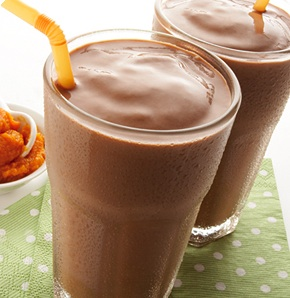

BATIDOS
Batido De Chocolate

Espectativa
Ingredientes:
- 600 g de helado de chocolate de calidad
- 4 cucharadas de cacao en polvo
- 600 ml de leche
- 150 g de azúcar moreno
Pasos:
- Ponemos el helado de chocolate, el cacao y la leche en el vaso de la batidora y batimos hasta conseguir un batido homogéneo. Probamos y si lo queremos más dulce añadimos azúcar a nuestro gusto.
- Reservamos en el frigorífico unos minutos antes el momento de servir.
- En el momento de servir repartimos en cuatro vasos individuales y espolvoreamos con cacao en polvo.


Este es un sitio de recetas rápidas que puedes hacer facilmente para una reunión, sorpresa, algo casual o simplemente para ti.